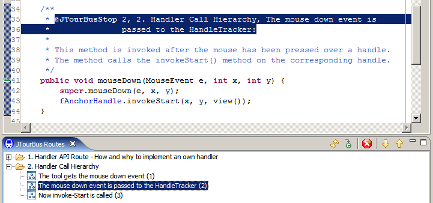

- Home
- About Saros
- Installation & Set-Up
- Support
- Develop on Saros
- Check-Out and First Steps
- Ongoing Work
- Guidelines
- Tools
- Processes
- Mailinglists
- Bug Tracker
- Saros@Sourceforge
- Google Summer of Code
- FAQ in daily practice
- Update local code to master
- Revert local changes
- Upload a new patch set
- Building in Gerrit failed!
- Get & run someones change
- Change? Patch set? Submit?
- Check Gerrit permissions
- Delete local branch
- Duplicate Location Error
- Review a change
- Run STF tests locally
- STF tests fail
- Set up STF tests
- Write STF tests
- Git use-cases
- Technical Documentation
- Research
- Contact
JTourBus
JTourBus provides an easy way for understanding existing source code. We use JTourBus inside Saros.
Download & Install
You can install JTourBus by using the update site http://saros-build.imp.fu-berlin.de/update-jtourbus
Abstract
Many small and medium-sized systems have little or no design documentation, which makes program understanding during maintenance enormously more difficult when performed by outsiders. Thus, if only minimal design documentation is available, which form should it take to maximize its usefulness?
We suggest that it is helpful if the documentation describes a tour through the source code, leading the user directly to relevant details. We present the design and implementation of an Eclipse plug-in called JTourBus that provides incremental interactive navigation of such tours.
We report a controlled experiment with 59 subjects in which we validated JTourBus against equivalent documentation in a plain text format for the 27 KLOC JHotDraw framework. The results indicate that the resulting program understanding can be achieved faster with JTourBus than with a plain text documentation.
Screenshot

Screenshot of the JTourBusRoutes view in Eclipse after jumping to the second stop of the second tour. The example is taken from the source code used in the experiment.
Publications
-
Oezbek, C., Prechelt L. JTourBus: Simplifying Program Understanding by Documentation that Provides Tours Through the Source Code. In Proceedings of the 23th IEEE International Conference on Software Maintenance (ICSM'07), IEEE Computer Society, Paris, October 2-5, 2007. (PDF, PPT, References tourexp-iscm.bib)
Related Work
-
TagSEA - "Tags for Software Engineering Activities in Eclipse" is a research collaboration between the University of Victoria's Computer Human Interaction & Software Engineering Lab and the IBM Watson Research Centre.
-
Tours - Waypoints, Tags, and Tours: Applying Social Bookmarking to Software Development is research at IBM Watson Research Center.
Experiment Workspaces and Task
The following document describes the task given to participants to solve with the prepared workspaces images of JHotDraw.
The following workspaces were used in the experiment. Both are based on a stripped-down JHotDraw 6 beta.
-
Workspace-J.zip contains a modified JHotDraw including JTourBus-tours for the JTourBus group.
-
Workspace-P.zip contains JHotDraw plus a single text-document "handler-docu.txt" and was used by group Plain-text.
Developer Access
The JTourBus source code is hosted on GitHub:
For write access to the repository please contact Franz Zieris.
How to use it
- Open the JTourBus Routes View using → →
- Select → and click
- Select Saros in the Package Explorer and click the determine project button (red square in the view).
- JTourBus scans the project for tours. This may take some time.
- After scanning you can move through the tours by clicking a station in the JTourBus Routes view
Bug Tracker
You can find the JTourBus bug tracker at Sourceforge.